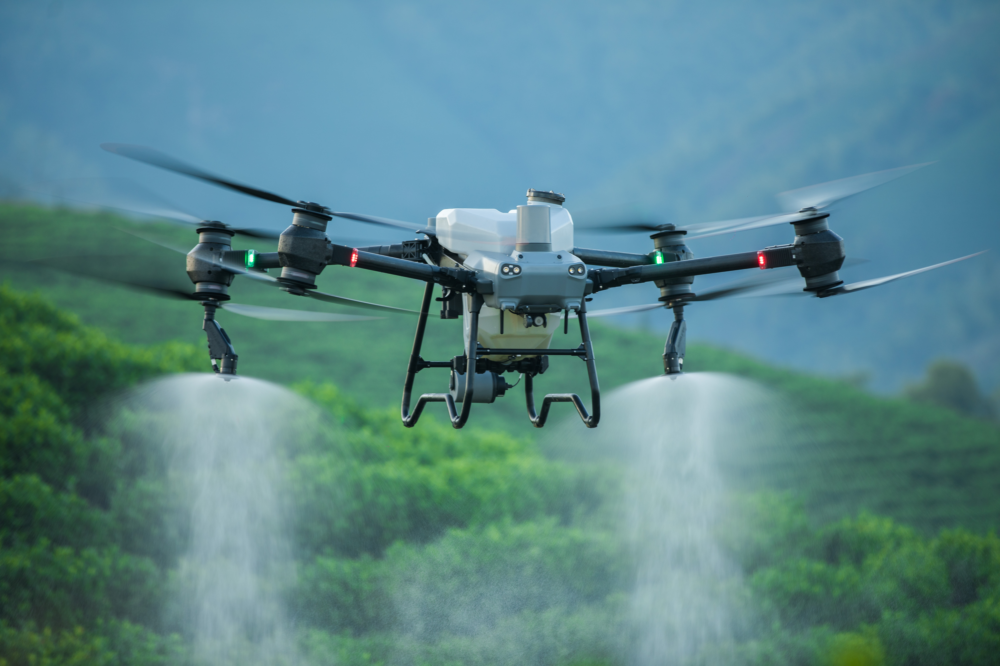

Distributeur officiel DJI — Algérie
Le drone révolutionne l'agriculture.
SARL Equip Drones équipe les exploitations et les prestataires algériens en drones DJI pour une gestion précise des cultures. Formation des pilotes agricoles, maintenance et pièces détachées sont proposées localement en Algérie.

Agrément & partenariat
Première compagnie algérienne partenaire de DJI.
Equip Drones se présente comme la première compagnie algérienne partenaire de DJI et dispose d’un agrément du Centre National des Systèmes d’Aéronefs Sans Pilote à bord. Ces engagements soutiennent la traçabilité du matériel et l’accompagnement proposé par l’entreprise.
Notre matériel est fourni par le canal officiel DJI. Nous proposons des pièces d’origine et un interlocuteur local pour l’accompagnement technique agricole. Le périmètre de garantie et les modalités de service sont confirmés pour le produit choisi.
La mission d’Equip Drones est d’accompagner l’adoption de la technologie dans l’agriculture algérienne et de contribuer à l’autosuffisance alimentaire du pays.
Cycle opérationnel DJI Agras
Découvrez comment organiser les vols, le remplissage et une rotation de quatre batteries avec des équipements de charge compatibles.
Catalogue
Une gamme pour chaque type d'opération.
Appareils agricoles Agras, plateformes Enterprise et drones légers pour la photo aérienne. Importés par le canal officiel
et distribués localement.
Chargement…
Applications
Des usages pour traiter, cartographier et inspecter.
Le même appareil ne convient pas à une plaine céréalière et à une palmeraie. Chaque secteur a ses contraintes de relief, de dose et de fenêtre d’intervention.
Céréaliculture
Blé, orge et avoine : couvrir de grandes surfaces dans des fenêtres météo courtes, sans tasser les sols ni écraser de rangs au passage.
02Palmeraies & vergers
Traiter en hauteur et en terrain irrégulier, là où un pulvérisateur tracté n’accède pas ou n’atteint pas la couronne des arbres.
03Viticulture
Application rang par rang sur parcelles en pente ou en terrasses, avec des réglages de suivi du relief adaptés.
04Maraîchage & serres
Parcelles morcelées, abords de serres et interventions courtes : le format compact prime sur la capacité de cuve.
05Inspection d'infrastructure
Inspection de lignes électriques, de tours télécoms et de constructions avec des capteurs LiDAR, thermiques et zoom compatibles.
06Topographie & cadastre
Relevés photogrammétriques et orthophotos géoréférencées pour le cadastre, l’irrigation et les projets d’aménagement.
Services pour drones agricoles
La livraison est la première étape vers un drone opérationnel.
Formation, maintenance et pièces accompagnent l’appareil pendant sa durée d’utilisation et contribuent à sa valeur opérationnelle.
Vente et conseil
Choix du modèle, dimensionnement de la flotte et des batteries selon vos cultures, vos surfaces et votre calendrier de traitement.
02Formation des pilotes
Formation des opérateurs au pilotage, aux procédures de traitement et à la réglementation applicable aux aéronefs sans pilote à bord.
03Maintenance et réparation
Diagnostic, réparation et entretien périodique par nos techniciens, pour limiter l’immobilisation en pleine campagne.
04Pièces détachées
Approvisionnement en pièces d’origine et éléments d’usure — hélices, buses, pompes, batteries — pour garder vos appareils en vol.
Parlons de votre projet
Dites-nous ce que vous voulez réaliser
Nous échangeons sur une configuration adaptée, préparons un devis détaillé et confirmons le délai de livraison prévu.
Aucun prix n’est affiché sur ce site : chaque configuration fait l’objet d’un devis personnalisé.